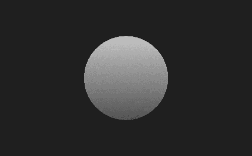
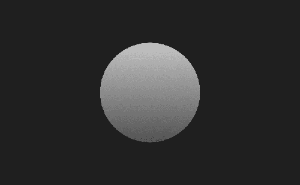

L0917–W0718 · 52.43 h · 30.93 RE · 18.55 VI · 1.56 AU · 1.40 DV
Mithvaer is a long-term worldbuilding project focused on creating a universe wherein my Oeuvre can exist.
Mithvaer is a long-term worldbuilding project focused on creating a universe wherein my Oeuvre can exist.
